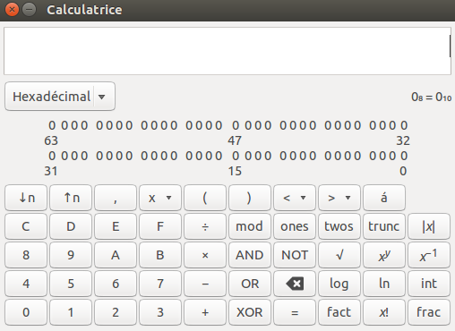

Analysons une capture de paquets
Voici une capture de paquet IP réalisée avec la commande tcpdump et l'option -X
root@xxxxxx:# tcpdump -i eth2 -X
tcpdump: verbose output suppressed, use -v or -vv for full protocol decode
listening on eth2, link-type EN10MB (Ethernet), capture size 65535 bytes
0x0000: 4500 0054 c82c 4000 4001 a555 0aa1 03d3 E..T.,@.@..U....
0x0010: c05d fe55 0800 cb4b 4208 0029 e55d d157 .].U...KB..).].W
0x0020: 44ca 0400 0809 0a0b 0c0d 0e0f 1011 1213 D...............
0x0030: 1415 1617 1819 1a1b 1c1d 1e1f 2021 2223 .............!"#
0x0040: 2425 2627 2829 2a2b 2c2d 2e2f 3031 3233 $%&'()*+,-./0123
0x0050: 3435 3637 4567
- Décodez uniquement les champs Version, IHL, Total Length, Time To Live, Protocol, Source Address, Destination Address de ce paquet IP (attention les valeurs sont en hexadécimal). Référez-vous au format de l'entête IP précedemment abordé. Vous pouvez utiliser le mode programmation de gnome-calculator pour convertir les valeurs de cet en-tête :

- Une fois décodé, déterminez en résolvant les adresses IP avec l'outil nslookup (outil que nous allons voir juste ensuite) le nom des machines source et destination. Pour cela tapez nslookup suivi de l'adresse IP décodée.
- Ce paquet contient-il des options ?
- A votre avis, quelle type d'application pourrait avoir envoyé ce paquet IP ?